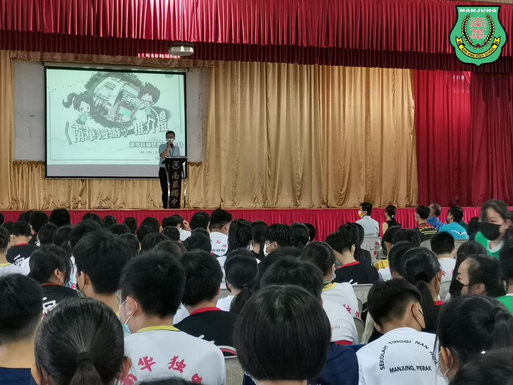
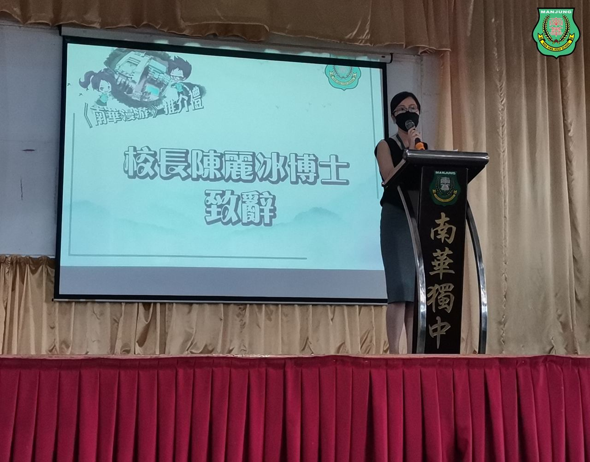
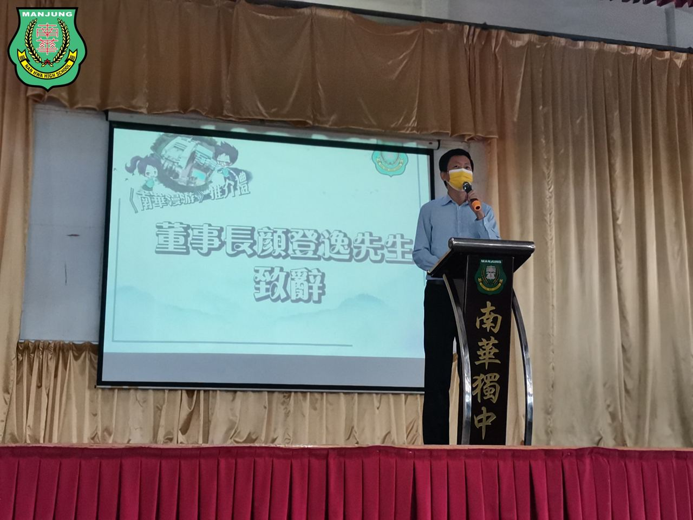
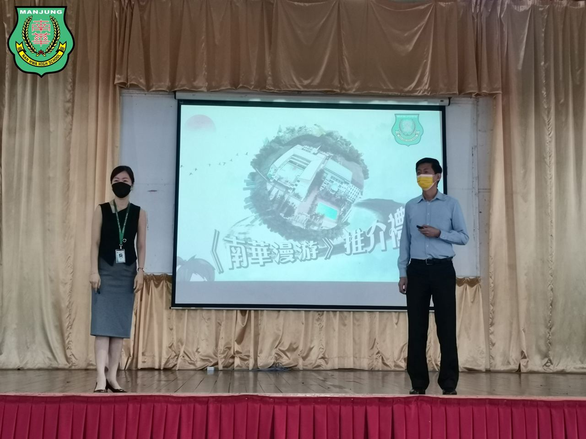
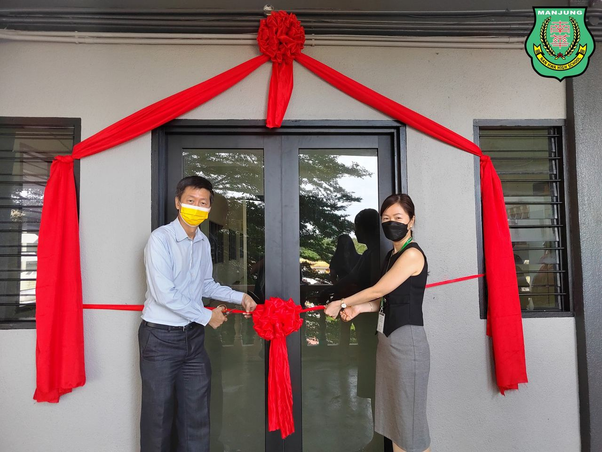
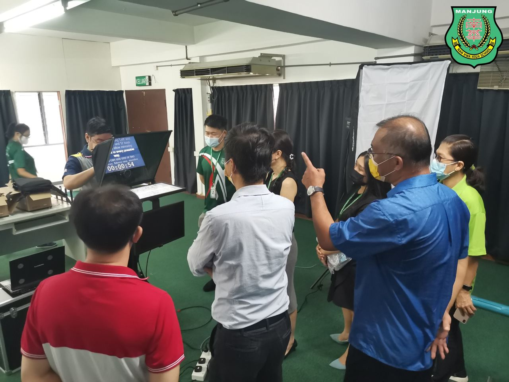
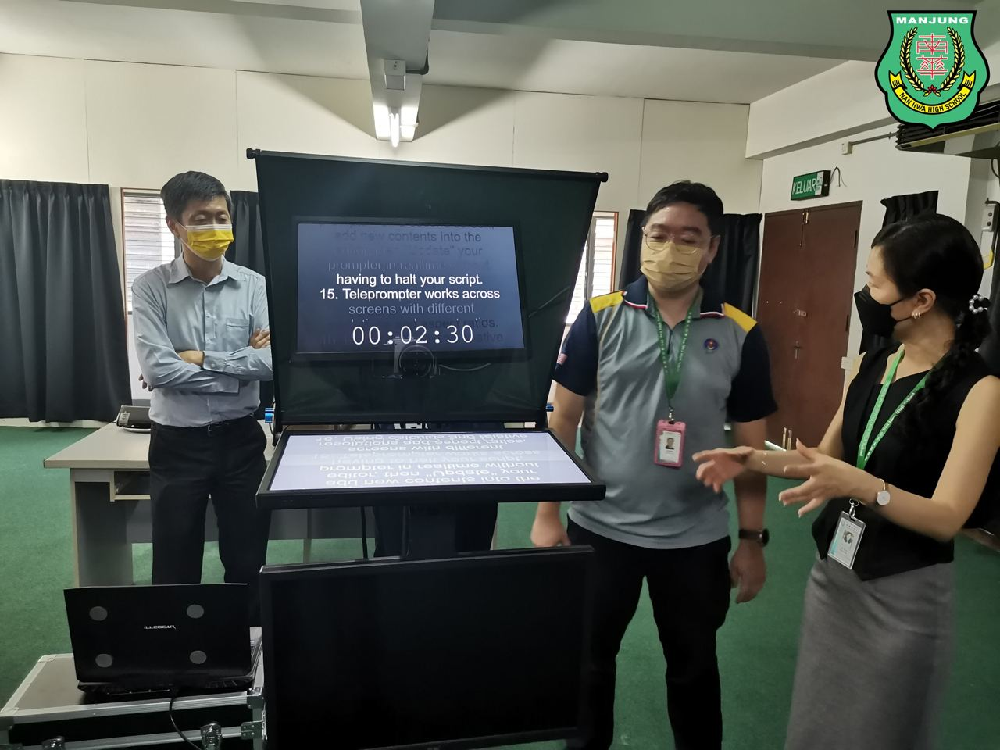

🌏《南华漫游》推介礼
🌏《南华漫游》推介礼
暨影艺空间启动仪式🎥🎙
今日的南华独中可谓双喜临门——
一喜是，学生成长纪录《南华漫游》新书推介；
二喜是，南华独中“影艺空间”正式启用。
《南华漫游》是一本学生成长记录，是课程改革所倡导的开放性质性评价的体现，更是学校、教师、学生和家长能够共同参与的成长印记，让学生看到并见证自己的成长足迹，帮助学生自我认识、增强自信、从而促进学生全面、持续地成长。
“影艺空间”则是一处结合摄影黑室、直播录影间以及展示学生影艺作品的综合性空间，是本校为了跟上“自媒体”时代的脚步，特此在本校建设完善的硬体设备，以培养学生大众传播及影艺天赋。
#南华漫游 #推介礼
#影艺空间 #启动仪式
#南华独中 #曼绒 #实兆远







